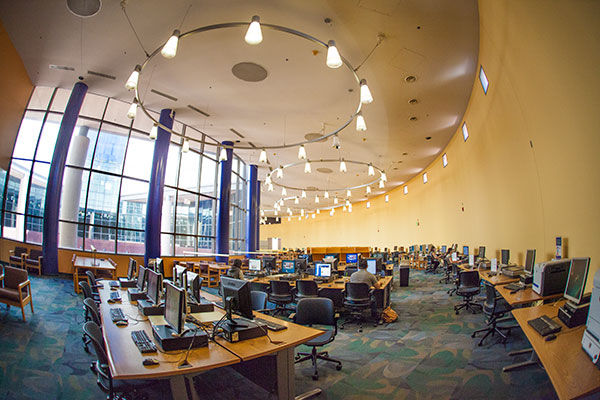
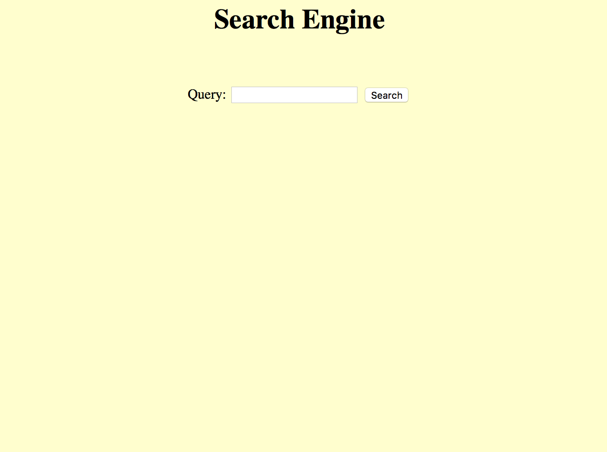

| Experience |
|  |
Lab Tutor
University of California, Irvine | September 2016 - Present
Guide students in introductory Java programming course at the UCI Computer Science Department by answering questions in weekly scheduled lab sections
|
|
Data Science Intern
Black Knight Financial Services | June 2016 - August 2016
Irvine, CA
- Managed real-estate/mortgage Big Data on company's Hadoop clusters using Hive, Sqoop and Java
- Created a Web UI to monitor the data ingestion status using Apache Kafka message broker and REST API
- Researched how Convolutional Neural Network could be used for house image recognition and prediction for sale (DenseCap)
|
|
Software Development Intern
ECMiner | July 2016
Seoul, South Korea
- Provided data visualization for corporate clients using scatter plots and matrix scatter plots of client Big Data sets using OpenGL with C++, and WebGL with Javascript
- Created coding standards documentation from completed projects to aid future interns' efforts
|
| Projects |
 |
Movie Database Management Website "Fabflix"
January 2016 - March 2016
- In a team of three throughout one quarter, developed a mini "Netflix" server called "Fabflix." Using Apache Tomcat Web server both on local machine and on Amazon Web Services (AWS) instance, "Fabflix" provides a Web-based Graphical User Interface (GUI) to browse, search and checkout movies that are associated with specific stars and genres
- Basic "Fabflix" features are also applied to and are available as an Android app
- Programmed using HTML, MySQL and Java Database Connectivity (JDBC), and Android Studio
|
|  |
Search Engine
February 2016 - March 2016
- Collected a large set of data from the Web using Web Crawling technique, and developed an index and a search engine. The search engine retrieves a list of top five most relevant websites that contain user typed words from the developed index
- Programmed using Java, along with JSON, MySQL and JSOUP to store and parse the crawled data
|